Summary
This case covers a full identity and access administration cycle inside Microsoft Entra ID: onboarding a new user with the correct license and attributes, assigning administrative roles with the correct scope, building a role-assignable security group, auditing and documenting self-service password reset (SSPR) and password protection settings, and using the Conditional Access What If tool to determine exactly which access policies apply to a specific real-world sign-in scenario. The work was completed as the hands-on assessment for the Microsoft Applied Skills credential Get started with identities and access using Microsoft Entra, which I passed.
Environment
- Live Microsoft Entra ID tenant provisioned as part of the Microsoft Applied Skills interactive lab assessment
- Sample organization (Contoso-style tenant) with pre-existing users, groups, and Conditional Access policies to audit and extend
- Tools used: Microsoft Entra admin center (entra.microsoft.com) and the Conditional Access What If analysis tool
User & license management
The first task was standard new-hire onboarding in Entra: create a disabled account (pending start date) with the correct job metadata, then license it.
- Created user
Ben Smithwith account sign-in disabled, job title Accountant, department Finance, and usage location set to United States — usage location has to be set before a license can be assigned - Assigned an Office 365 E5 license to the new account
- Assigned the Billing Administrator role to an existing user (Lynne Robbins) as an active assignment
- Invited an external guest user (Arlene Huff, a.huff@contoso.com) to collaborate, with job title and company metadata set
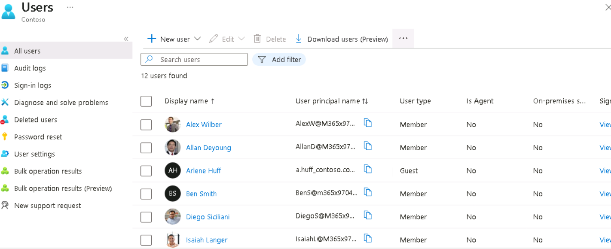
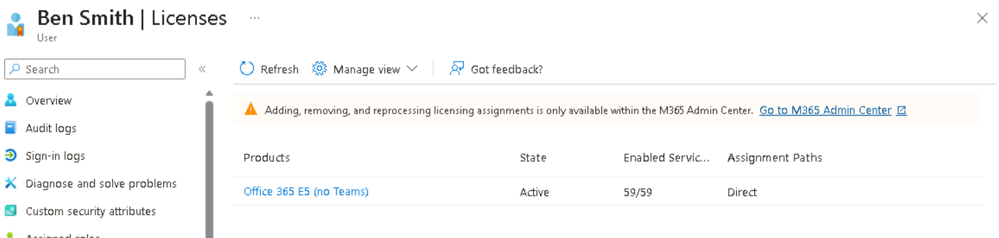
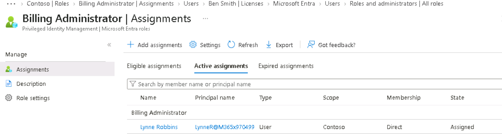
Group-based role assignment
Rather than assigning roles to individual users directly, the better-practice approach is a role-assignable security group — it's easier to audit and easier to revoke access from in bulk later.
- Created a role-assignable security group
Tech1, added Alex Wilber as a member, and assigned it the Reports Reader role directly on the group - Updated the existing
SSPRsecurity group: added Alex Wilber as an owner and Megan Bowen as a member
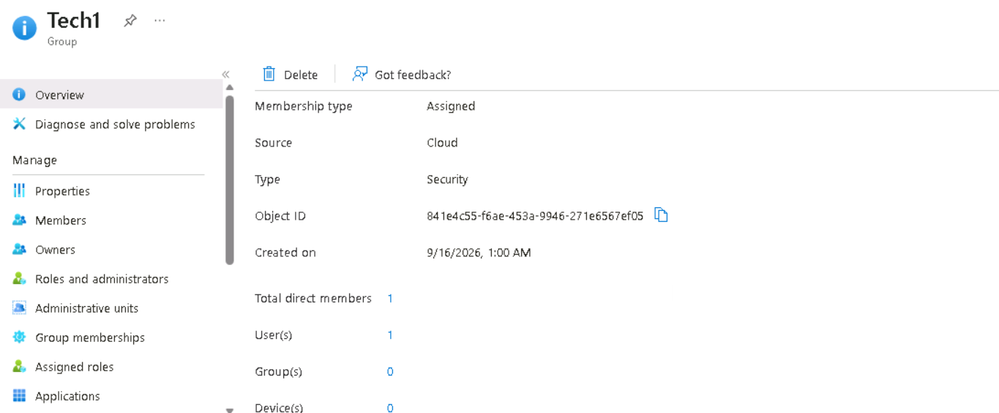
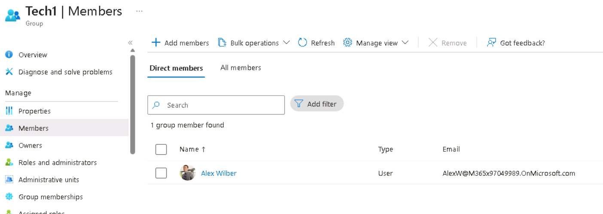
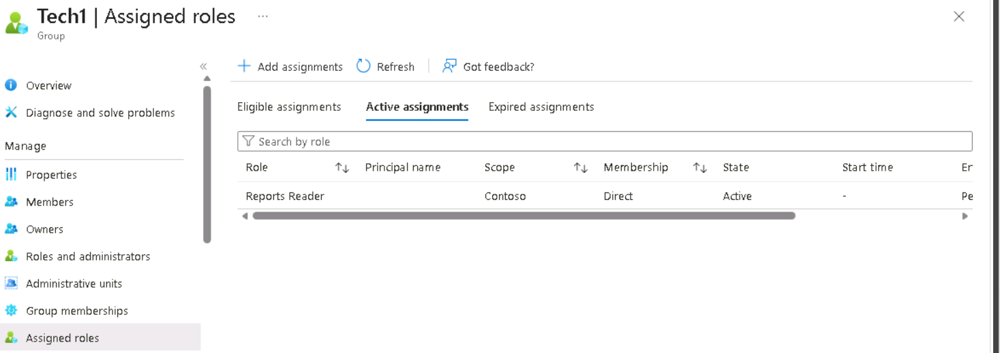
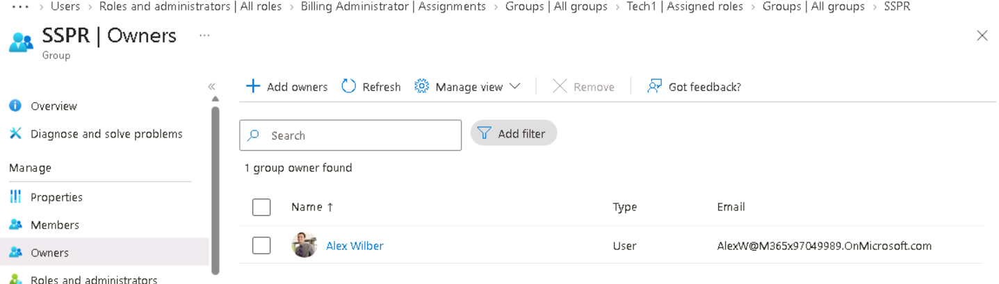
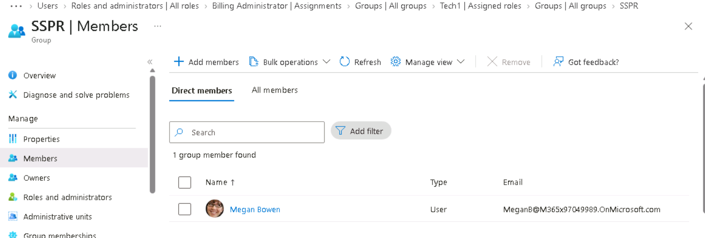
Documenting security configuration
The next task simulated a common real request: an internal team needs current security configuration documented accurately, not from memory or outdated notes. I pulled the live settings directly from three places in the admin center:
- Password protection (Authentication methods > Password protection): the custom banned password list and lockout threshold settings
- Password reset (Password reset > Properties and Authentication methods): self-service password reset was set to
Nonefor regular end users (admins are always SSPR-enabled by policy), with the specific reset methods and number of methods required documented separately - Named locations (Conditional Access > Named locations): the countries-based named locations already configured for use in Conditional Access policies
Each of these was recorded in the organization's configuration-tracking file, matched field-by-field against the live settings rather than assumed. The password protection settings showed a lockout threshold of 15 attempts, a 120-second lockout duration, and a custom banned password list including the word "Falcon." The password reset policy required just 1 authentication method to reset a password, with Passkey (FIDO2), Microsoft Authenticator, and Email OTP enabled as valid methods, while SMS and Voice Call were not. The named locations configured for Conditional Access covered Algeria and Sweden.
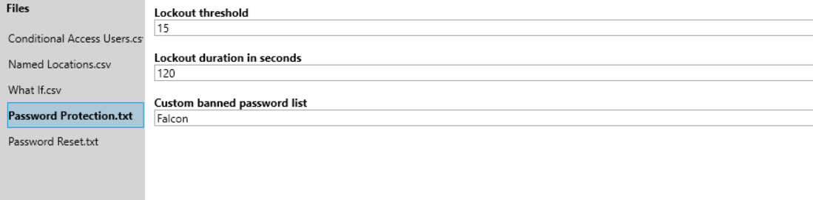
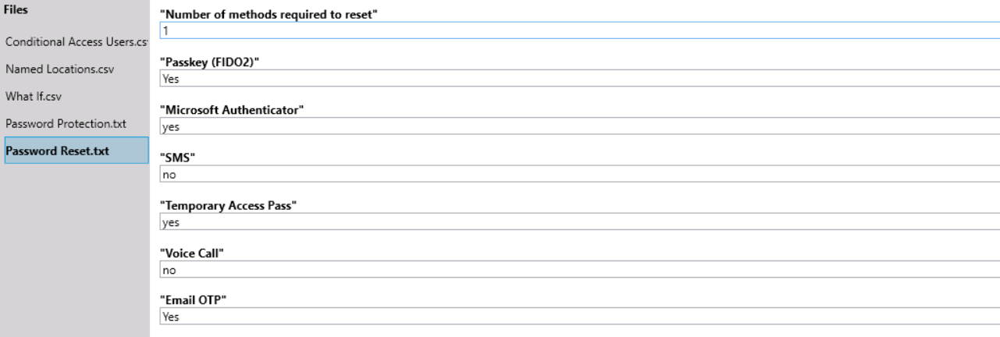
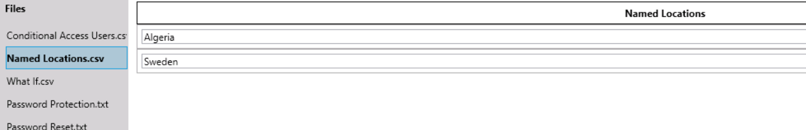
Conditional Access impact analysis
The last task used the What If tool to answer a specific access question: which Conditional Access policies apply when a named user signs in under a defined set of risky-looking conditions?
Scenario tested: user Diego Siciliani, signing in to Office 365 Exchange Online via a Browser, from an Android device, from the United States, from IP 131.107.1.10, with sign-in risk set to High.
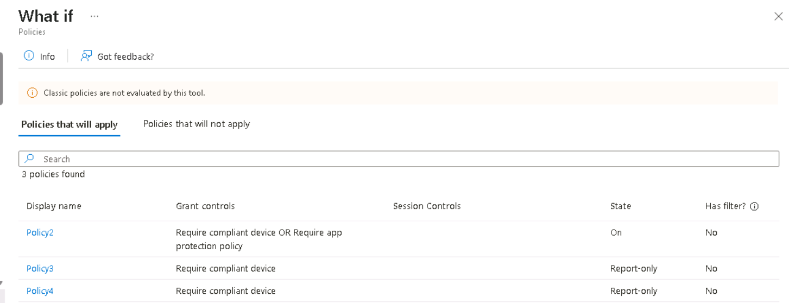
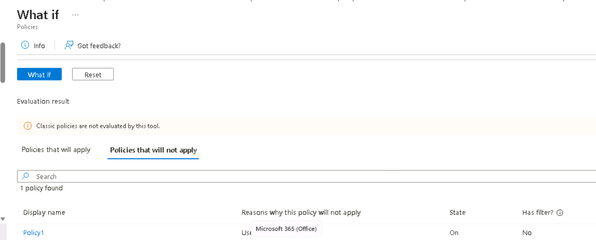
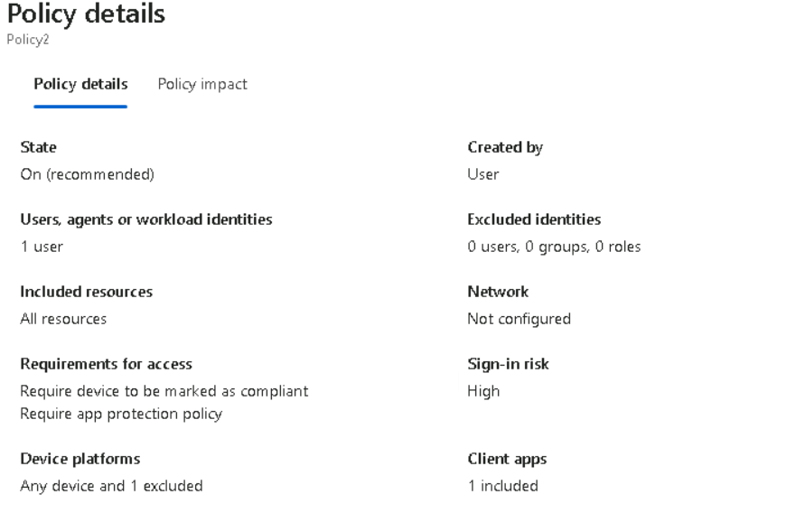
Policy2 applied because it's directly assigned to Diego Siciliani and requires either a compliant device or an app protection policy given the high sign-in risk in the tested scenario. Policy3 and Policy4 also applied since they're assigned to All users, though both are in Report-only mode — meaning they'd log the event without actually blocking access. Policy1 did not apply at all, and the reason turned out to be simpler than a condition mismatch: it's assigned only to Alex Wilber, so it was never in scope for Diego's sign-in regardless of device, location, or risk level.
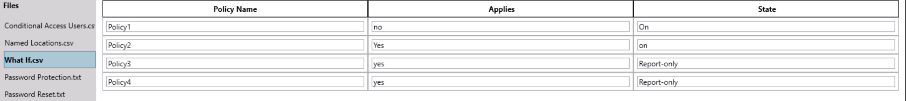
I then went through each existing Conditional Access policy individually and documented exactly which users or groups each one targets, since a policy's real-world effect depends entirely on its assignment — a strong policy assigned to the wrong (or no) users provides no protection at all.
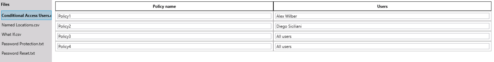
Credential earned
This work was assessed and passed as the Microsoft Applied Skills credential Get started with identities and access using Microsoft Entra, which stays on my Microsoft transcript permanently. It is online-verifiable, with a unique credential ID and issue date, and was signed as a Microsoft-issued credential.
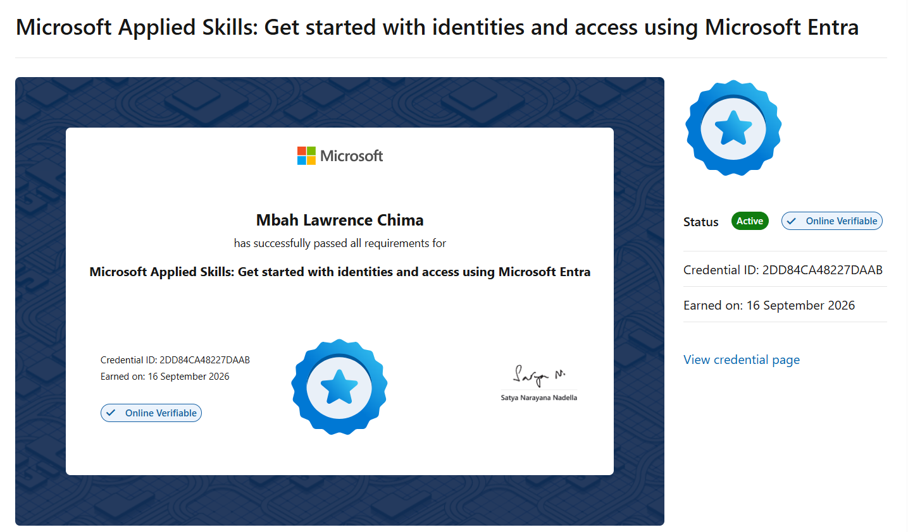
Lessons learned
This project made clear that a policy's real-world effect depends as much on who it's assigned to and what state it's in as on its grant controls — Policy1 looked structurally similar to the others but simply didn't apply because it targeted a different user, and Policy3/Policy4 being in Report-only mode meant they'd have caught the risky sign-in in logs without actually stopping it. It also reinforced why group-based role assignment, like giving Tech1 the Reports Reader role rather than assigning it to Alex Wilber directly, is the better pattern in practice: it's one place to audit and revoke access instead of chasing it down per user across a growing organization.